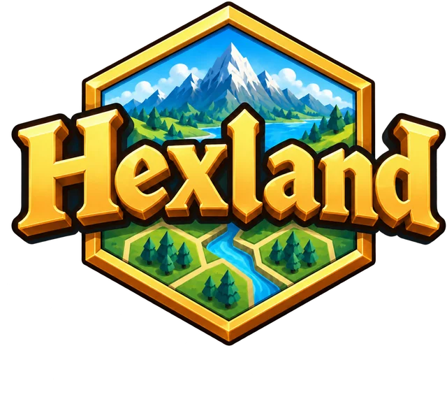

Pick a facility on the right, then click a hex to build it.

Every hexagon holds a small population. Your job is to give all of them access to three goods, from a corner bakery to a regional hospital, without going broke. The map will show you each facility's market area as you build.
Walter Christaller (1933) asked a simple question: if land were perfectly flat and people were spread out evenly, where would towns form, and why are some bigger than others? His answer is a hierarchy of central places, each serving the surrounding area with goods and services.
| Good | Order | Range | Threshold | Real-world cousins |
|---|---|---|---|---|
| Bakery | Low | 1 hex | 400 people | Gas station, convenience store |
| Grocery store | Middle | 2 hexes | 1,000 people | Pharmacy, high school |
| Hospital | High | 4 hexes | 2,800 people | University, stadium, airport |
Low-order goods are bought often and nobody travels far for them, so bakeries are many and close together. High-order goods are bought rarely, so a hospital needs a huge threshold population and can draw from a wide range. Fewer of them, farther apart.
A market area is really a circle with radius equal to the range. Circles either leave gaps or overlap, and overlapping means competing. Hexagons are the closest shape to a circle that tiles a plane with no gaps. Watch the boundaries the game draws between neighboring facilities: they settle into hexagons on their own.
A place that offers a high-order good also offers every lower-order good. A city has hospitals, but it has bakeries too; a hamlet has only the bakery. So higher-order centers are nested inside the market areas of the order above them. The game's hierarchy score checks whether your groceries sit at bakeries and your hospitals sit at groceries. Christaller described several nesting ratios; the best known is K=3, where each higher-order center serves its own area plus a third of each of the six neighbors.
Switch to the river valley and the pattern warps: dense areas support more, closer facilities and sparse hills can't reach thresholds at all. That gap between the model and the map is exactly what geographers use the theory for.
Each card carries a code computed from the name, date, landscape, verdict, and score. Enter what the student's card shows to regenerate it.